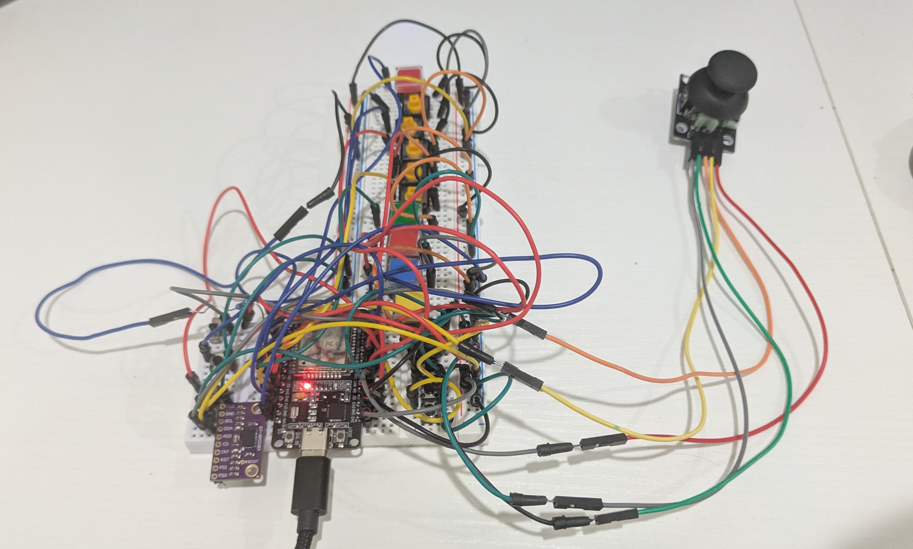
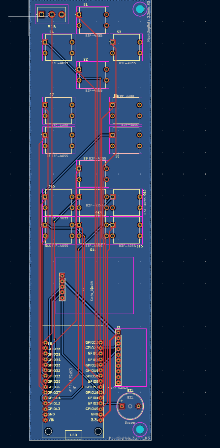
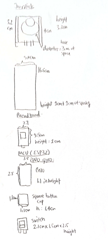
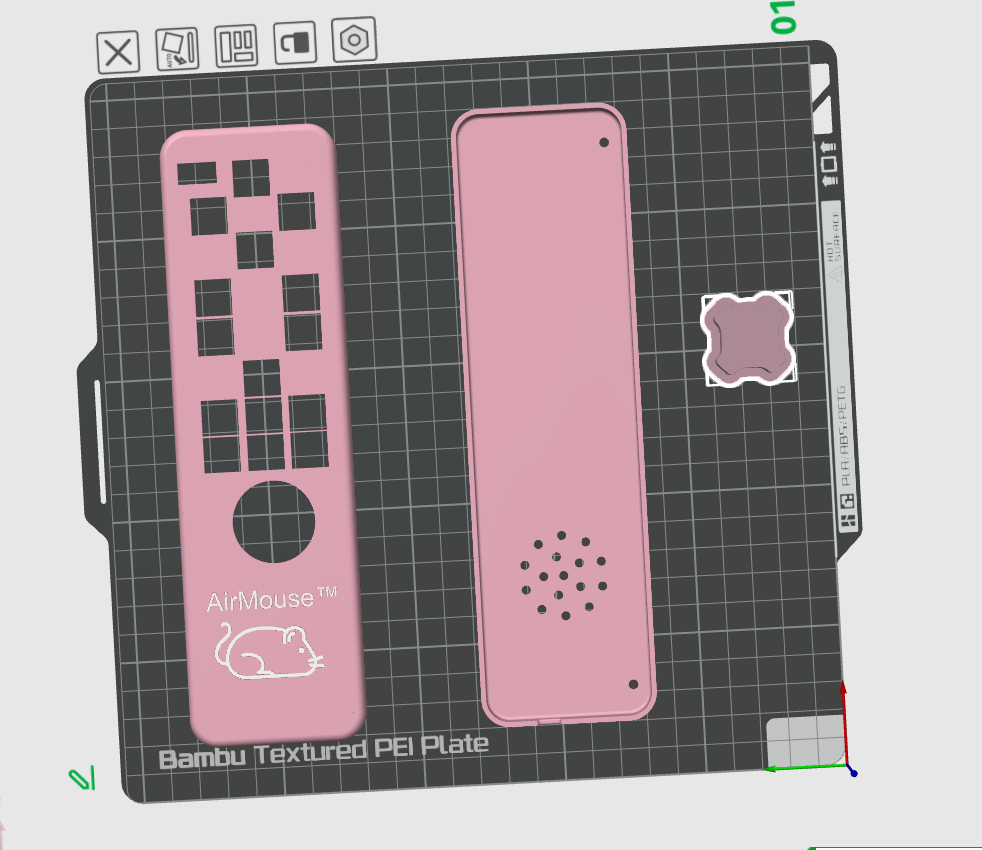

AirMouse
One-handed adaptive gaming remote
A one-handed adaptive controller with a joystick, motion input, and Bluetooth connectivity. I designed the electronics, firmware, PCB, and enclosure for my PlayStation Career Pathways Prompt 3 project.
Role: Hardware Designer & Firmware Developer
Tools: ESP32, BNO080 IMU, KiCad, Fusion 360 & Bambu Slicer
My Ownerships
This is a solo-project for PlayStation Fall 2026 Game Jam.I developed the controller from the initial sketches through breadboard testing, PCB design, and enclosure CAD.
- Electronics: Built and tested the breadboard prototype, including the ESP32, KY-023 joystick, B3F-4055 buttons, BNO080IMU, passive buzzer, and SPDT switch.
- Firmware: Wrote and debugged Bluetooth gamepad and air-mouse modes with Home-button mode switching.
- ECAD: Designed the KiCad schematic, verified footprints, routed the PCB.
- MCAD: Designed the Fusion 360 enclosure around the PCB STEP model and prepared it for 3D printing.
- Documentation: Measured components, prepared BOM, and shared regular progress updates.
The one-handed control concept
I wanted to build an adaptive controller for players who use one hand. I sketched a few TV-remote-style layouts with a joystick, directional controls, and game buttons within reach.
The joystick controls movement, while rotating the remote could control the camera or aiming. This reduces dependence on a second analog stick and leaves more room for buttons.
Electronics prototyping & ECAD
I wired the ESP32, joystick, buttons, BNO080 IMU, buzzer, and enable switch on a breadboard and tested their functions. The prototype uses USB power and communicates over Bluetooth.
I completed the schematic in KiCad, verified the footprints, and routed the PCB. After reviewing the layout, I sent it to JLCPCB for manufacturing in November 2026. Next are board testing and desoldering the KY-023 joystick module for assembly.


Mechanical design & 3D printing
I measured the components and designed the enclosure in Fusion 360 using the PCB's ECAD STEP file. I then imported the model into Bambu Slicer and selected the print colors. The enclosure is ready for printing and fit testing.


Firmware & control modes
I wrote and debugged two control modes. Air-mouse mode uses the IMU gyroscope to move the PC cursor, with the plus and minus buttons as left and right click. Gamepad mode sends joystick and button inputs over Bluetooth. Long-pressing Home switches modes. GitHub repo
// ESP32 DevKit + BNO080: Xbox-style controller / desktop mouse.
// Starts in controller mode. Hold HOME to switch modes.
// Controller: joystick = left stick; gyro = right stick.
// Desktop: gyro = cursor; START = right-click; BACK = left-click.
#include <Arduino.h>
#include <Wire.h>
#include <BleCompositeHID.h>
#include <XboxGamepadDevice.h>
#include <MouseDevice.h>
#include <SparkFun_BNO080_Arduino_Library.h>
const int JOY_X=34, JOY_Y=35, JOY_SW=16;
const int BUZZER_PIN=2, SDA_PIN=21, SCL_PIN=22;
const int buttonPins[]={13,14,25,26,27,32,33,17,18,19,23,4,12,15,5};
const char* buttonNames[]={"A","B","X","Y","L","ZL","R","ZR",
"UP","DOWN","LEFT","RIGHT","HOME","START","BACK"};
const int N=sizeof(buttonPins)/sizeof(buttonPins[0]);
const int HOME_INDEX=12, START_INDEX=13, BACK_INDEX=14;
// Axis direction settings.
const bool INVERT_STICK_X=false, INVERT_STICK_Y=true;
const bool INVERT_AIM_X=true, INVERT_AIM_Y=false;
const float STICK_DEADZONE=0.10f;
const float GYRO_DEADZONE_DPS=3.0f;
// Controller aim: faster rotation reaches full right-stick deflection.
// Lower values increase aiming sensitivity.
const float FULL_STICK_DPS=100.0f;
const float AIM_FILTER=0.20f;
const float MOUSE_SENSITIVITY=60.0f;
const int MOUSE_MAX_STEP=20;
const bool START_IN_MOUSE_MODE=false;
const unsigned long REPORT_MS=10, HOME_HOLD_MS=500;
const unsigned long SETTLE_MS=150, RAMP_MS=200, GYRO_STALE_MS=150;
BleCompositeHID hid("OneHand EDF5", "Enqi Wang", 100);
XboxGamepadDevice* pad=nullptr;
MouseDevice* mouse=nullptr;
BNO080 imu;
bool imuOk=false, mouseMode=START_IN_MOUSE_MODE, wasConnected=false;
bool raw[N]={}, pressed[N]={};
unsigned long changed[N]={};
bool swRaw=false, swPressed=false;
unsigned long swChanged=0;
int centerX=2048, centerY=2048;
float yawDps=0, pitchDps=0;
unsigned long lastGyroMs=0;
float aimX=0, aimY=0, remainderX=0, remainderY=0;
unsigned long modeStartMs=0, lastReportMs=0;
bool leftDown=false, rightDown=false;
bool homeTracking=false, homeHandled=false;
unsigned long homeStartMs=0, homePulseUntilMs=0;
void beep(int frequency, int durationMs) {
#if ESP_ARDUINO_VERSION_MAJOR >= 3
tone(BUZZER_PIN,frequency);
delay(durationMs);
noTone(BUZZER_PIN);
#else
ledcAttachPin(BUZZER_PIN,0);
ledcWriteTone(0,frequency);
delay(durationMs);
ledcWriteTone(0,0);
ledcDetachPin(BUZZER_PIN);
#endif
digitalWrite(BUZZER_PIN,LOW);
}
void calibrateJoystick() {
long sx=0, sy=0;
for(int i=0;i<64;i++) {
sx+=analogRead(JOY_X);
sy+=analogRead(JOY_Y);
delay(3);
}
centerX=sx/64; centerY=sy/64;
Serial.printf("Joystick center X=%d Y=%d\n",centerX,centerY);
}
float stickAxis(int value,int center,bool invert) {
float delta=value-center;
float range=delta>=0 ? 4095-center : center;
if(range<1) range=1;
float v=constrain(delta/range,-1.0f,1.0f);
float a=fabsf(v);
if(a<=STICK_DEADZONE) return 0;
v=(v>0?1.0f:-1.0f)*(a-STICK_DEADZONE)/(1.0f-STICK_DEADZONE);
return invert ? -v : v;
}
void updateImu() {
if(!imuOk) return;
for(int n=0;n<8 && imu.dataAvailable();n++) {
float y=imu.getGyroZ()*RAD_TO_DEG;
float p=imu.getGyroX()*RAD_TO_DEG;
if(isfinite(y) && isfinite(p)) {
yawDps=y; pitchDps=p;
lastGyroMs=millis();
}
}
}
float gyroDeadzone(float v) {
float a=fabsf(v);
if(a<=GYRO_DEADZONE_DPS) return 0;
return (v>0?1.0f:-1.0f)*(a-GYRO_DEADZONE_DPS);
}
void resetMotion() {
aimX=aimY=remainderX=remainderY=0;
}
void neutralPad() {
pad->resetInputs();
pad->setLeftThumb(0,0);
pad->setRightThumb(0,0);
pad->setTriggers(0,0);
pad->releaseDPad();
if(hid.isConnected()) pad->sendGamepadReport();
}
void neutralMouse() {
mouse->mouseRelease(1);
mouse->mouseRelease(2);
mouse->mouseMove(0,0);
leftDown=rightDown=false;
if(hid.isConnected()) mouse->sendMouseReport();
}
void setMouseMode(bool enabled) {
neutralPad();
neutralMouse();
resetMotion();
homePulseUntilMs=0;
mouseMode=enabled;
beep(mouseMode?1800:900,60);
modeStartMs=millis();
lastReportMs=modeStartMs;
Serial.println(mouseMode ? "MODE: DESKTOP MOUSE" : "MODE: CONTROLLER");
}
void updateButtons(unsigned long now) {
for(int i=0;i<N;i++) {
bool p=digitalRead(buttonPins[i])==LOW;
if(p!=raw[i]) { raw[i]=p; changed[i]=now; }
if(raw[i]!=pressed[i] && now-changed[i]>=12) {
pressed[i]=raw[i];
Serial.printf("%s %s\n",buttonNames[i],pressed[i]?"PRESSED":"released");
}
}
bool s=digitalRead(JOY_SW)==LOW;
if(s!=swRaw) { swRaw=s; swChanged=now; }
if(swRaw!=swPressed && now-swChanged>=12) swPressed=swRaw;
}
void updateHome(unsigned long now) {
if(pressed[HOME_INDEX]) {
if(!homeTracking) {
homeTracking=true;
homeHandled=false;
homeStartMs=now;
}
if(!homeHandled && now-homeStartMs>=HOME_HOLD_MS) {
homeHandled=true;
setMouseMode(!mouseMode);
}
} else if(homeTracking) {
if(!homeHandled && !mouseMode) {
homePulseUntilMs=millis()+80;
}
homeTracking=false;
resetMotion();
modeStartMs=millis();
lastReportMs=modeStartMs;
}
}
void updateAim(unsigned long now) {
bool fresh=(now-lastGyroMs)<GYRO_STALE_MS;
unsigned long elapsed=now-modeStartMs;
if(!imuOk || !fresh || elapsed<SETTLE_MS) {
aimX=aimY=0;
return;
}
float ramp=constrain((float)(elapsed-SETTLE_MS)/RAMP_MS,0.0f,1.0f);
float x=gyroDeadzone(yawDps)*ramp;
float y=gyroDeadzone(pitchDps)*ramp;
if(INVERT_AIM_X) x=-x;
if(INVERT_AIM_Y) y=-y;
aimX+=AIM_FILTER*(x-aimX);
aimY+=AIM_FILTER*(y-aimY);
}
void sendController(unsigned long now) {
// Build one complete report; no intermediate reports.
pad->resetInputs();
float x=stickAxis(analogRead(JOY_X),centerX,INVERT_STICK_X);
float y=stickAxis(analogRead(JOY_Y),centerY,INVERT_STICK_Y);
pad->setLeftThumb((int16_t)(x*32767.0f),(int16_t)(y*32767.0f));
float rx=constrain(aimX/FULL_STICK_DPS,-1.0f,1.0f);
float ry=constrain(aimY/FULL_STICK_DPS,-1.0f,1.0f);
pad->setRightThumb((int16_t)(rx*32767.0f),(int16_t)(ry*32767.0f));
if(pressed[0]) pad->press(XBOX_BUTTON_A);
if(pressed[1]) pad->press(XBOX_BUTTON_B);
if(pressed[2]) pad->press(XBOX_BUTTON_X);
if(pressed[3]) pad->press(XBOX_BUTTON_Y);
if(pressed[4]) pad->press(XBOX_BUTTON_LB);
if(pressed[6]) pad->press(XBOX_BUTTON_RB);
pad->setTriggers(pressed[5]?1023:0,pressed[7]?1023:0);
if(pressed[START_INDEX]) pad->press(XBOX_BUTTON_START);
if(pressed[BACK_INDEX]) pad->press(XBOX_BUTTON_SELECT);
if(swPressed) pad->press(XBOX_BUTTON_LS);
if(homePulseUntilMs!=0 && (long)(homePulseUntilMs-now)>0) {
pad->press(XBOX_BUTTON_HOME);
} else { homePulseUntilMs=0; }
uint8_t directions=0;
if(pressed[8]) directions|=XboxDpadFlags::NORTH;
if(pressed[9]) directions|=XboxDpadFlags::SOUTH;
if(pressed[10]) directions|=XboxDpadFlags::WEST;
if(pressed[11]) directions|=XboxDpadFlags::EAST;
pad->pressDPadDirectionFlag((XboxDpadFlags)directions);
pad->sendGamepadReport();
}
void sendDesktopMouse(float dt) {
bool wantLeft=pressed[BACK_INDEX];
bool wantRight=pressed[START_INDEX];
bool dirty=wantLeft!=leftDown || wantRight!=rightDown;
if(wantLeft!=leftDown) {
if(wantLeft) mouse->mousePress(1); else mouse->mouseRelease(1);
leftDown=wantLeft;
}
if(wantRight!=rightDown) {
if(wantRight) mouse->mousePress(2); else mouse->mouseRelease(2);
rightDown=wantRight;
}
remainderX+=aimX*dt*MOUSE_SENSITIVITY*2.0f;
remainderY+=aimY*dt*MOUSE_SENSITIVITY*2.0f;
int wholeX=(int)remainderX, wholeY=(int)remainderY;
remainderX-=wholeX; remainderY-=wholeY;
int mx=constrain(wholeX,-MOUSE_MAX_STEP,MOUSE_MAX_STEP);
int my=constrain(wholeY,-MOUSE_MAX_STEP,MOUSE_MAX_STEP);
if(mx || my || dirty) {
mouse->mouseMove((int8_t)mx,(int8_t)my);
mouse->sendMouseReport();
}
}
void setup() {
Serial.begin(115200);
delay(300);
for(int i=0;i<N;i++) {
pinMode(buttonPins[i],INPUT_PULLUP);
raw[i]=pressed[i]=digitalRead(buttonPins[i])==LOW;
changed[i]=millis();
}
pinMode(JOY_SW,INPUT_PULLUP);
pinMode(BUZZER_PIN,OUTPUT);
digitalWrite(BUZZER_PIN,LOW);
analogReadResolution(12);
analogSetAttenuation(ADC_11db);
Wire.begin(SDA_PIN,SCL_PIN);
Wire.setClock(400000);
imuOk=imu.begin(0x4B,Wire);
if(!imuOk) imuOk=imu.begin(0x4A,Wire);
if(imuOk) { imu.enableGyro(10); delay(200); updateImu(); }
Serial.println(imuOk?"BNO080 OK":"BNO080 NOT FOUND - joystick still works");
calibrateJoystick();
// Xbox-compatible descriptor, signed stick range and host identity.
auto* xboxConfig=new XboxOneSControllerDeviceConfiguration();
xboxConfig->setAutoReport(false);
BLEHostConfiguration hostConfig=xboxConfig->getIdealHostConfiguration();
pad=new XboxGamepadDevice(xboxConfig);
pad->resetInputs();
pad->setLeftThumb(0,0);
pad->setRightThumb(0,0);
MouseConfiguration mouseConfig;
mouseConfig.setAutoReport(false);
mouse=new MouseDevice(mouseConfig);
hid.addDevice(mouse);
hid.addDevice(pad);
hid.begin(hostConfig);
Serial.println("Pair OneHand EDF5. Hold HOME 0.5 seconds to switch modes.");
}
void loop() {
updateImu();
unsigned long now=millis();
updateButtons(now);
bool connected=hid.isConnected();
if(connected && !wasConnected) {
setMouseMode(START_IN_MOUSE_MODE);
homeTracking=false;
homeHandled=false;
}
if(!connected && wasConnected) {
neutralPad(); neutralMouse(); resetMotion();
homePulseUntilMs=0;
homeTracking=false;
Serial.println("Bluetooth disconnected");
}
wasConnected=connected;
if(!connected) return;
updateHome(millis());
now=millis();
if(now-lastReportMs<REPORT_MS) return;
float dt=(now-lastReportMs)/1000.0f;
lastReportMs=now;
if(dt>0.1f) dt=REPORT_MS/1000.0f;
updateAim(now);
if(mouseMode) sendDesktopMouse(dt);
else sendController(now);
}Assembly & final testing
Next, I will solder and assemble the controller, debug the firmware on the final hardware, and test it with a PC game. Testing will cover the inputs, mode switching, Bluetooth connection, and whether the buttons are comfortable to reach during one-handed play.
Bill of Materials (BOM)
Component subtotal: $35.25
| A | B | C | D | E | F | G | |
|---|---|---|---|---|---|---|---|
| 1 | Level | Part # | Part Name | Description | Material | Cost (USD) | External Component Vendor |
| 2 | 1 | AirMouse | One-handed adaptive controller prototype | ||||
| 3 | 1.1 | ESP32 | Microcontroller | Bluetooth input communication and firmware | N/A | ||
| 4 | 1.2 | KY-023 | Joystick Module | Dual-axis joystick with push-button input | N/A | $3.50 | |
| 5 | 1.3 | BNO080 | IMU | 9-DOF motion-sensor breakout | N/A | $20.00 | |
| 6 | 1.4 | B3F-4055 | 15 Buttons | 15 tactile switches × $0.452 (10+ price tier) | N/A | $6.78 | DigiKey |
| 7 | 1.5 | Buzzer | Passive buzzer | N/A | $2.40 | ||
| 8 | 1.6 | SS12D10G5 | Slide Switch | SHOU HAN slide switch | N/A | $0.17 | LCSC |
| 9 | 1.7 | Miscellaneous Parts | Wiring, headers, and mounting hardware | N/A | |||
| 10 | 1.8 | PCB | Custom PCB; $12 for 5 boards | N/A | $2.40 | JLCPCB | |
| 11 | 1.9 | Joystick Mount | 3D-printed joystick mounting bracket | PLA | Bambu Lab PLA Basic | ||
| 12 | 1.10 | Front Housing | Front enclosure housing | PLA | Bambu Lab PLA Basic | ||
| 13 | 1.11 | Rear Housing | Rear enclosure housing | PLA | Bambu Lab PLA Basic | ||
| 14 | Component Subtotal | $35.25 |
© 2026 Enqi Wang. All rights reserved.